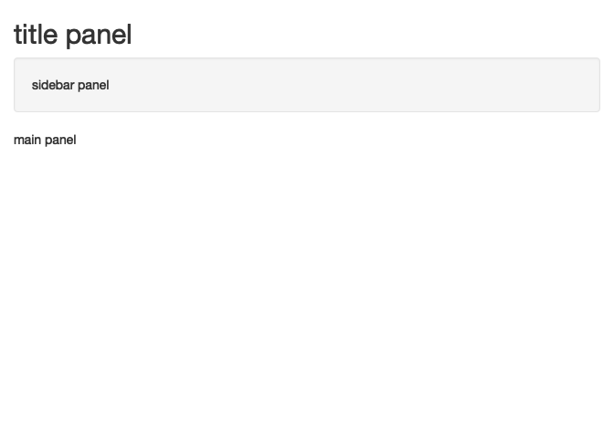
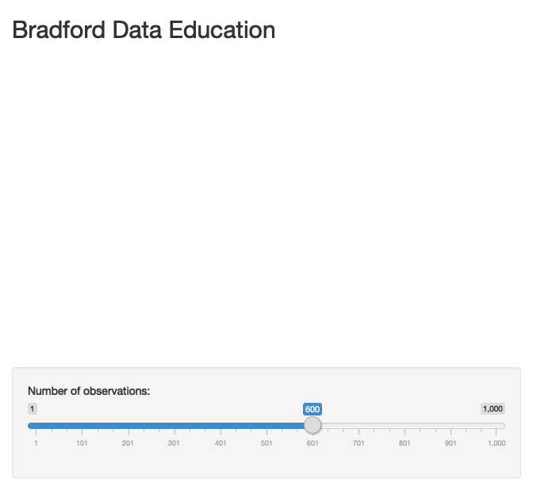
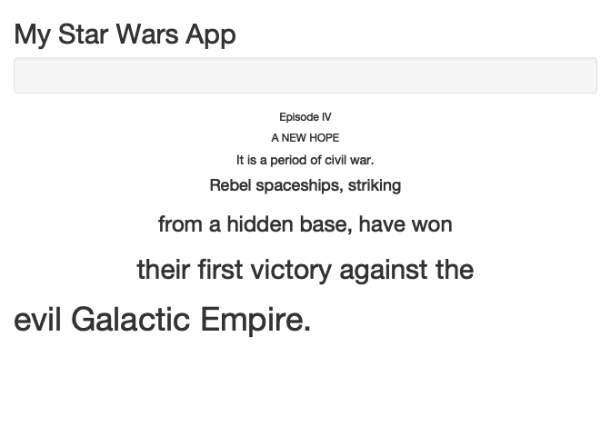
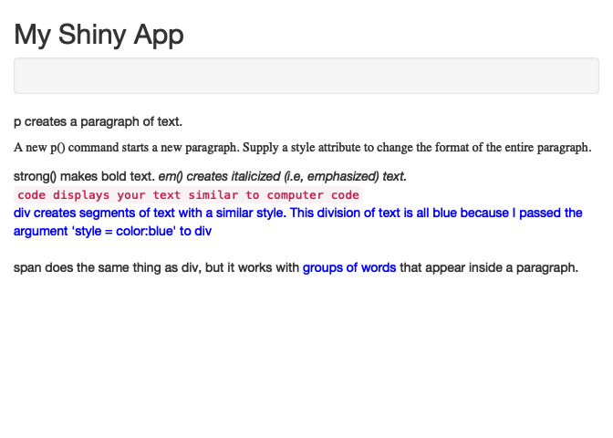
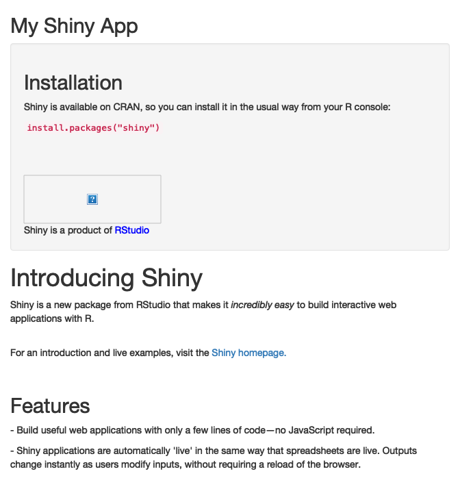

4 Interface
This code is the bare minimum needed to create a Shiny app.
library(shiny)
# Define UI ----
ui <- fluidPage(
)
# Define server logic ----
server <- function(input, output) {
}
# Run the app ----
shinyApp(ui = ui, server = server)##
## Listening on http://127.0.0.1:5039
4.1 Layout
Shiny uses the function fluidPage to create a display that automatically adjusts to the dimensions of your user’s browser window. You lay out the user interface of your app by placing elements in the fluidPage function.
For example, the ui function below creates a user interface that has a title panel and a sidebar layout, which includes a sidebar panel and a main panel. Note that these elements are placed within the fluidPage function while other Shiny parts remain constant (i.e. server side and linking up).
library(shiny)
ui <- fluidPage(
titlePanel("title panel"),
sidebarLayout(
sidebarPanel("sidebar panel"),
mainPanel("main panel")
)
)
# Server side
server <- function(input, output) {
}
# Run the app ----
shinyApp(ui = ui, server = server)##
## Listening on http://127.0.0.1:7750
titlePanel and sidebarLayout are the two most popular elements to add to fluidPage. They create a basic Shiny app with a sidebar. The sidebar panel will appear on the left side of your app by default. You can move it to the right side by giving sidebarLayout the optional argument position = "right".
sidebarLayout always takes two arguments:
- sidebarPanel function output
- mainPanel function output
# Package
library(shiny)
# Layout
ui <- fluidPage(
titlePanel("Bradford Data Education"),
sidebarLayout(position = "right", # default is on the left
sidebarPanel(
sliderInput(
"obs", "Number of observations:",
min = 1, max = 1000, value = 600)
),
mainPanel(plotOutput("distPlot")
)
)
)
# Server
server <- function(input, output) {
}
# Tie
shinyApp(ui = ui, server = server)##
## Listening on http://127.0.0.1:7261
# Package
library(shiny)
# Layout
ui <- fluidPage(
titlePanel("My Star Wars App"),
sidebarLayout(
sidebarPanel(),
mainPanel(
h6("Episode IV", align = "center"),
h6("A NEW HOPE", align = "center"),
h5("It is a period of civil war.", align = "center"),
h4("Rebel spaceships, striking", align = "center"),
h3("from a hidden base, have won", align = "center"),
h2("their first victory against the", align = "center"),
h1("evil Galactic Empire.")
)
)
)
# Server
server <- function(input, output) {
}
# Tie
shinyApp(ui = ui, server = server)##
## Listening on http://127.0.0.1:5456
# Package
library(shiny)
# ui
ui <- fluidPage(
titlePanel("My Shiny App"),
sidebarLayout(
sidebarPanel(),
mainPanel(
p("p creates a paragraph of text."),
p("A new p() command starts a new paragraph. Supply a style attribute to change the format of the entire paragraph.", style = "font-family: 'times'; font-si16pt"),
strong("strong() makes bold text."),
em("em() creates italicized (i.e, emphasized) text."),
br(),
code("code displays your text similar to computer code"),
div("div creates segments of text with a similar style. This division of text is all blue because I passed the argument 'style = color:blue' to div", style = "color:blue"),
br(),
p("span does the same thing as div, but it works with",
span("groups of words", style = "color:blue"),
"that appear inside a paragraph.")
)
)
)
# Server
server <- function(input, output) {
}
# Tie
shinyApp(ui = ui, server = server)##
## Listening on http://127.0.0.1:5024
You can use Shiny’s layout, HTML, and img functions to create very attractive and useful user interfaces. See how well you understand these functions by recreating the Shiny app pictured below. Use the examples in this tutorial to work on it and then test it out.
library(shiny)
# Define UI ----
ui <- fluidPage(
titlePanel("My Shiny App"),
sidebarLayout(
sidebarPanel(
h2("Installation"),
p("Shiny is available on CRAN, so you can install it in the usual way from your R console:"),
code('install.packages("shiny")'),
br(),
br(),
br(),
br(),
img(src = "rstudio.png", height = 70, width = 200),
br(),
"Shiny is a product of ",
span("RStudio", style = "color:blue")
),
mainPanel(
h1("Introducing Shiny"),
p("Shiny is a new package from RStudio that makes it ",
em("incredibly easy "),
"to build interactive web applications with R."),
br(),
p("For an introduction and live examples, visit the ",
a("Shiny homepage.",
href = "http://shiny.rstudio.com")),
br(),
h2("Features"),
p("- Build useful web applications with only a few lines of code—no JavaScript required."),
p("- Shiny applications are automatically 'live' in the same way that ",
strong("spreadsheets"),
" are live. Outputs change instantly as users modify inputs, without requiring a reload of the browser.")
)
)
)
# Define server logic ----
server <- function(input, output) {
}
# Run the app ----
shinyApp(ui = ui, server = server)##
## Listening on http://127.0.0.1:5841
https://shiny.rstudio.com/tutorial/written-tutorial/lesson2/